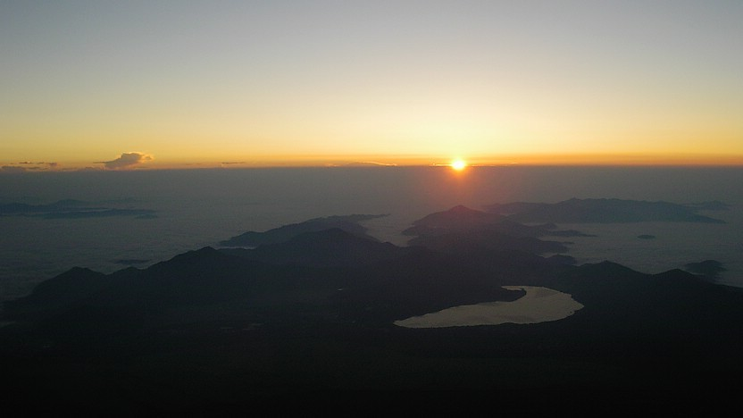
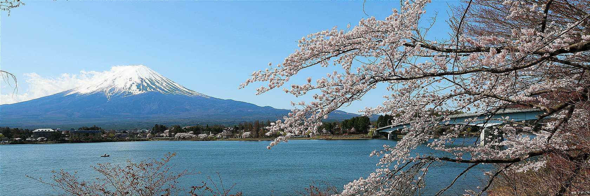
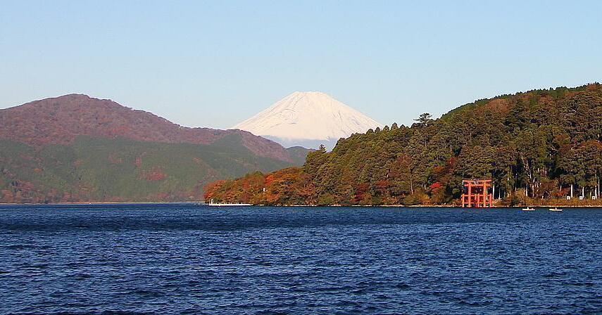
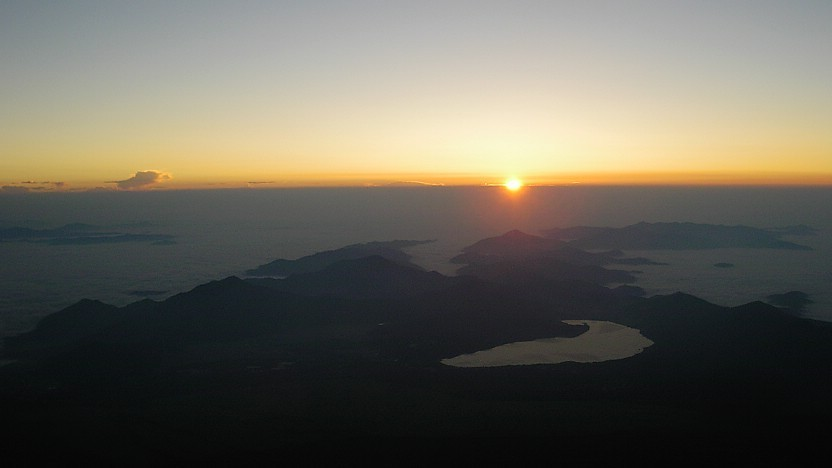
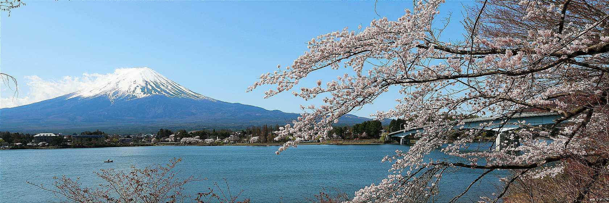
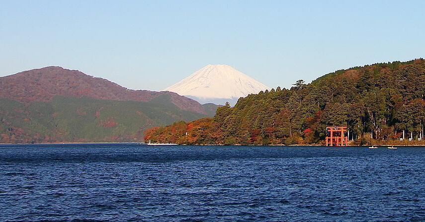

Mount Fuji
 





Introduction
With 3776 metres, Mount Fuji (also known as Fujisan, 富士山) is the tallest peak in Japan. It is hardly unexpected that the almost flawlessly sculpted volcano has long been revered as a sacred mountain and has had immense appeal among both artists and ordinary people.
The most recent eruption of Mount Fuji, which is an active volcano, occurred in 1707. On clear days, it can be seen from Tokyo and Yokohama since it sits on the boundary of Yamanashi and Shizuoka prefectures.
Fujinomiya
Shizuoka Prefecture's Fujinomiya (富士宮) is a city located on Mount Fuji's southwest flank. The area's most significant and well-known shrine, Fujinomiya Sengen Shrine, which serves as the customary starting place for the ascent of the mountain, is where the city got its name. Despite being one of the fastest and busiest ways to the summit, many people still begin their ascent from Fujinomiya's 5th Station.
Apart from that, the Shiraito Falls, one of Japan's most stunning waterfalls, are also located in Fujinomiya. On the approach to the Fuji Five Lakes region on the northern side of the mountain, the falls are located on the outskirts of the city.
Fujinomiya 5th Station
Out of the four 5th stations on Mount Fuji, the Fujinomiya 5th Station (富士宮五合目, Fujinmiya Gogme) is the second most populated and developed. The Fujisan Skyline, a winding route that leads to the fifth station, used to be a toll road but is now free to use. The Fujinomiya 5th Station, at 2400 metres above sea level, is the highest of the five stations, and the Fujinomiya Trail is the fastest ascent of Mount Fuji. It takes 4–7 hours to ascend, and 2-6 hours to descend. Keep in mind that the route does not provide views of the dawn prior to arriving at the peak.
The Fujinomiya 5th Station features a store, café, and restrooms in addition to many parking spots. This is the final opportunity for climbers to purchase food, water, oxygen, and other supplies at affordable prices before the prices soar at higher heights, just like the stores located at the previous 5th stations.
Summary
In conclusion, Mount Fuji is undoubtedly one of the most famous travel destinations in Japan. Not only because of the picturesque scenario on the summit of the mountain, Mount Fuji also has multiple attractive locations scattering around it such as Hakone and Fuji Five Lakes. However, Mount Fuji is frequently obscured by clouds and low visibility, so you should count yourself lucky if you see the peak clearly. In general, visibility is generally greater in the cooler months of the year compared to the summer and in the early morning and late evening compared to the middle of the day.